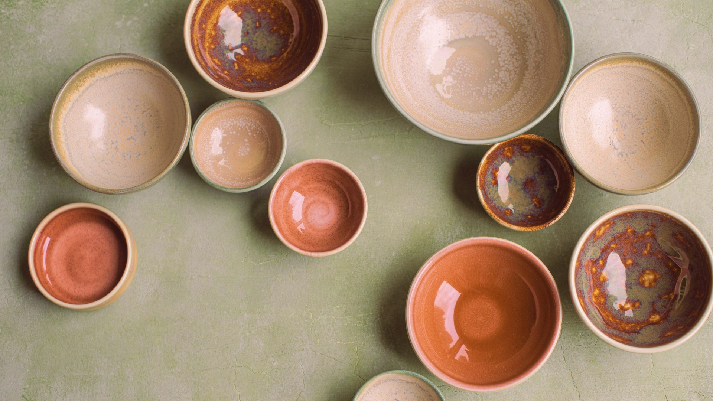

在日常中體驗器皿的美好
手作陶瓷器將器皿的溫度、專業職人的巧思與土地的氣息融入日常，和陶居邀請您參與我們的體驗活動，通過茶道、料理還有與職人面對面對話，來深入感受手作器皿的美好。前往會員專區了解更多

感受產地土壤的觸感與溫度
日本陶瓷器產地因其獨特的地理與歷史，開展出極致多樣的風格，從強調陶土本色與柴燒自然窯變的樸實粗獷，到追求精湛工藝與釉彩繪畫的優雅華麗，各產地有著獨有的技法與審美觀，更將日本特有的美學思考溶入日常生活的使用中，想要了解更多日本陶器產地的資訊嗎?請從這裡進入。日本陶瓷器的主要產地

日本器皿多樣豐富的種類
向付、急須、酒吞、八寸、豬口...，多樣的器皿名稱，體現了日本器皿文化的豐富性，不僅滿足實用功能，更承載著美學與季節感，想多了解日式器皿的類型嗎?請從這裡進入。日本器皿的主要種類


關於和陶居
結合手作陶瓷器的溫度與匠心，和陶居邀請您親身體驗讓器皿融入日常的美好。在這裡，每件器皿都承載著土地的氣息與生命的故事，等您來發掘。
前往關於我們